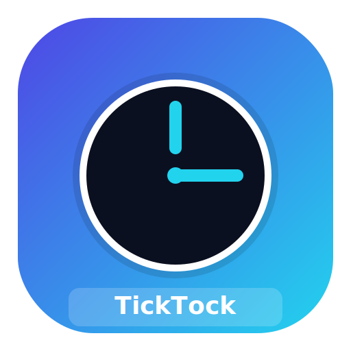

TickTock Tasks
Never miss a beat – smart recurring reminders
Login
Sign up
Logout
Enable Notifications
Install App
Set Backend
Create / Edit Task
Title
Notes
How often
Daily
Weekly
Monthly (approx)
Custom…
Every N days
Next due date
Reminder time
Save Task
Reset
Your Tasks
All
Due Today
Overdue
Priority
No tasks yet. Add your first task above!
PRIORITY
OVERDUE
DUE TODAY
✏️
🗑️